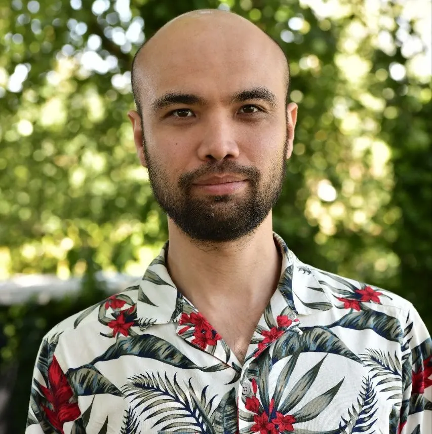

Journey
Before the web, I worked as a translator and mediator. Understanding people and making information clear is still at the heart of my UI/UX and web integration work today.

Saint-Lô, Normandy, France
The steps that matter.
Not a full CV: only what explains my profile today.
- 2020–2021
Translator and intercultural mediator
Dari, Persian and English translation for the European Asylum Support Office (EASO) in Greece. It taught me precision, confidentiality and how to make information clear for everyone.
- 2025–2026
Concepteur Designer UI training, FIM CCI Formation Normandie
UI/UX, Figma, visual communication, WordPress, web integration, SEO, accessibility and professional presentation, in Saint-Lô.
- 2025–2026
Afghan Community, graduation project
A bilingual platform for a real association: research, visual identity, WordPress, web quality and print materials.
- Feb–Apr 2026
DressYourBody, 10-week internship
UX and WooCommerce improvements on a live store, with the founder’s approval before every change.
- May 2026
Level 6 professional qualification
Awarded the Concepteur Designer UI professional qualification, level 6 (Bachelor’s level).
- Since May 2026
Pamir-Lux, ongoing e-commerce collaboration
Since May 2026: web design, Wix/Velo development, management of a 2,200+ product catalogue, content across 7 languages, B2C/B2B, QA and maintenance. Website live since 1 October 2026.
- Aug 2026
CALYNEVO, independent studio
I created my own activity to take on client projects. It stays separate from this portfolio and from my job search. In October 2026, the website got a new identity and a new version.
- Oct 2026
Nine demos for Saint-Lô businesses
Restaurants, pizzerias, a bar-brasserie, a bistro-bar, a beauty studio and a mobile hairdresser: nine sites in HTML, CSS and JavaScript, in French and English, each with its own case study. The Ray Elos demo was presented to the owner.
Four working languages.
- Dari and PersianNative
- EnglishC1
- FrenchDELF B1, moving to B2
- TurkishConversational
What I am looking for.
A first junior role in web design, UI/UX or WordPress integration, in Normandy, hybrid or remote. I am also open to international remote roles and focused freelance projects.
Contact
A role, a project or a simple question?
I reply in English or French, usually within 48 hours.